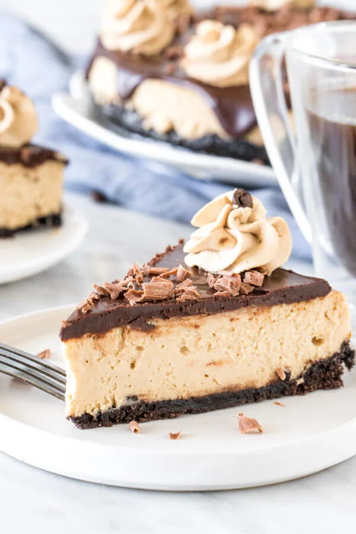

Coffee Cheesecake

After a good family meal, finish a lovely evening with this wonderfull coffee flavoured cheese cake!
Cheese cakes have been my favorite ever since I was a kid. This version reminds me of the time when I was a kid but with a mature twist.
This cake is perfect for a friends birthday party or simply having some family over and pairing it with your favorite coffee!
Ingredients
Oreo Crust
- 25 Oreo cookies, you'll use the filling and wafers
- 1/3 cup unsalted butter, melted
Cheesecake Filling
- 2-3 teaspoons instant coffee powder
- 1 tablespoon hot water
- 24 oz cream cheese, full-fat, brick style
- 1 1/4 cups white sugar
- 1 teaspoon vanilla extract
- 2/3 cup sour cream
- 3 large eggs
- hot water, for the water bath
Cocolate Ganache
- 6oz dark chocolate, 50-70%
- 2-3 cup heavy cream
- 1 teaspoon instant coffee powder, optional
Coffee Whipped Cream (Optional)
- 1/2 cup heavy cream
- 1 teaspoon instant coffee powder
Steps
Oreo Crust
- Preheat the oven to 350F degrees.
- Wrap the outside of a 9-inch springform pan with aluminium foil. Wrap it at least 3 times to ensure that all the seams are covered.
- Add the cookies (wafers and filling) to a food processor or high-powered blender and pulse until crumbs. Or place in ziploc bag, and crush with a rolling pin.
- Mix the cookie crumbs with the melted butter.
- Press the mixture into the bottom of the pan, creating a slight lip around the edges.
- Bake in the preheated oven for 10 minutes. Remove from the oven, and turn it down to 325F degrees.
Cheesecake Filling
- In a small cup, add the 1 tablespoon of water and instant coffee powder. The coffee doesn't need to entirely dissolve - it's just to help wit the process.
- In a large bowl, beat together the cream cheese, sugar and coffee dissolved in water until the cream cheese is soft with no lumps. Turn off the mixer and scrape down the sides and bottom of the bowl.
- Beat in the vanilla and sour cream.
- With the mixer on low speed, beat in the eggs 1 at a time until just combined.
- Place the springform pan with the crust (still wrapped in aluminum foil) in the middle of a large roasting pan.
- Pour the cheesecake batter over the crust, smoothing the top.
- Pour very hot water into the roasting pan so that there's about 1/2 inch of water in the roasting pan.
- Place the whole thing in the oven and bake for 50-60 minutes, or until the top looks just set except for in the very middle. If you give the pan a gentle nudge, the cheesecake should still have a slight wobble in the middle (think like jello or pudding).
- Remove the roasting pan (with the cheesecake inside) from the oven. Cool the cheesecake in the roeasting pan until the cheesecake is room tempature.
- Cover the panwith aluminum foil and place in the fridge to chill for at least 6 hours, or overnight.
Chocolate Ganache
- Chop the chocolat into veru small pieces and place in a heat proof bowl.
- Ass instant coffee to the cream and heat until the cream is almost boiling (either in the microwave or in a small saucepan while gently stirring).
- Pour the hot cream over the chopped chocolate, let it sit for 3 minutes. Then whisk until smooth.
- Remove the cheesecake from the fridge. Gently unclamp the outside of the springform pan.
- Pour the chocolate ganache over the cheesecake, letting it drip over the edges. Place the cheesecake back in the fridge until you're ready to serve
Coffee whipped Cream (Optional)
- Add the ionstant coffee powder to the heavy cream.Let it sit for a few minutes.
- In a large bowl beat the whipped cream until stiff peaks form.
- Decorate the cake right before serving with whipped cream and chocolate curls.